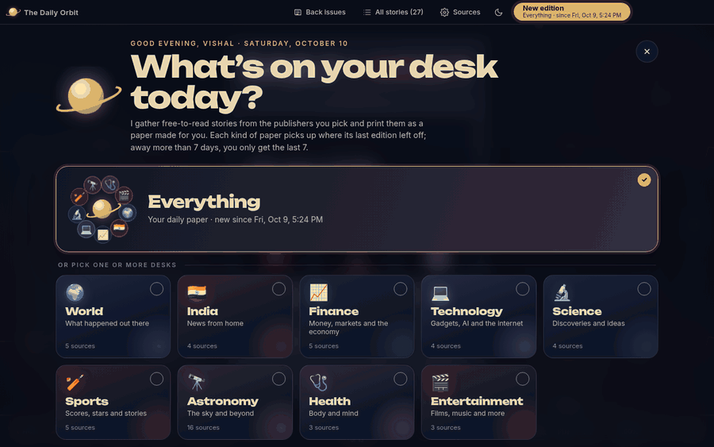
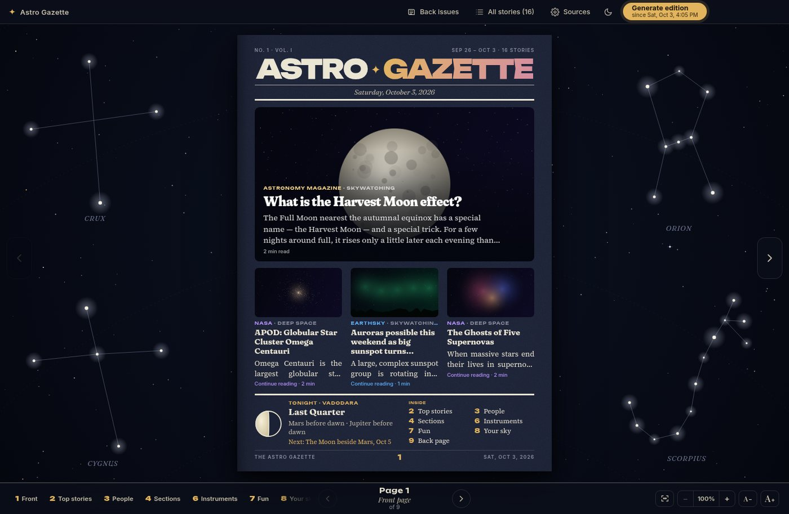
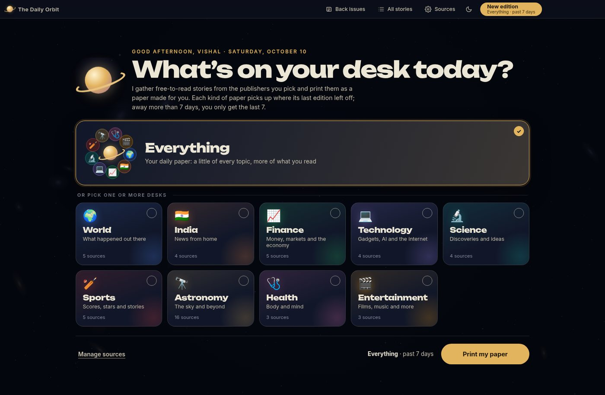
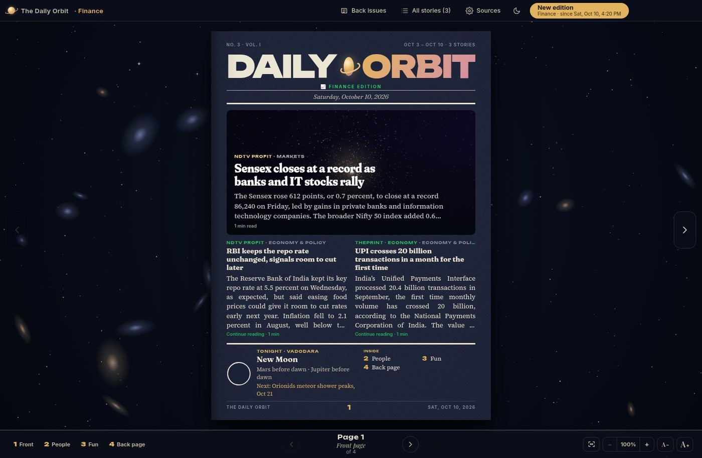
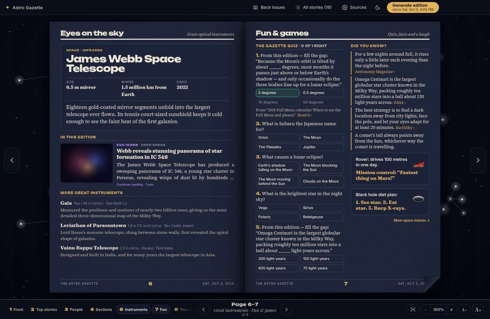
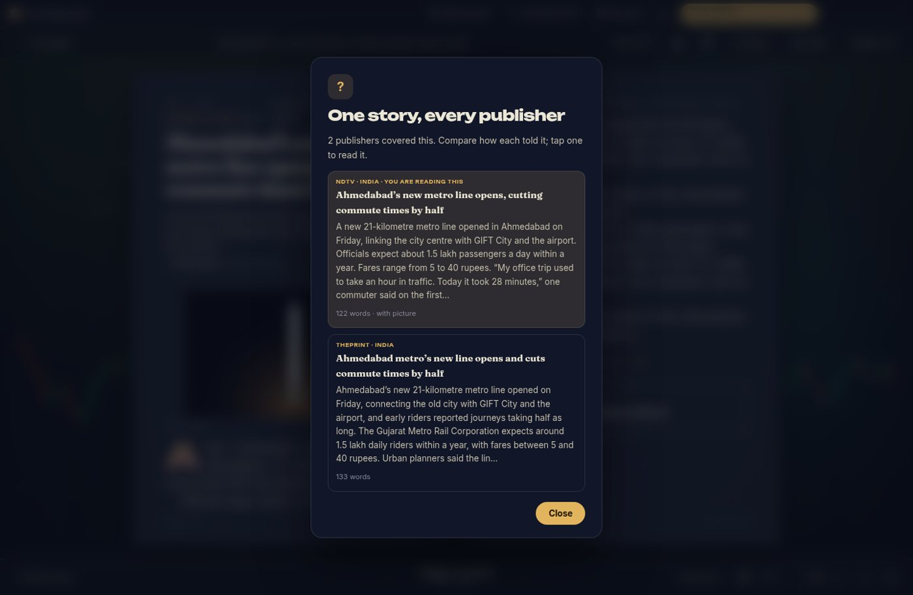
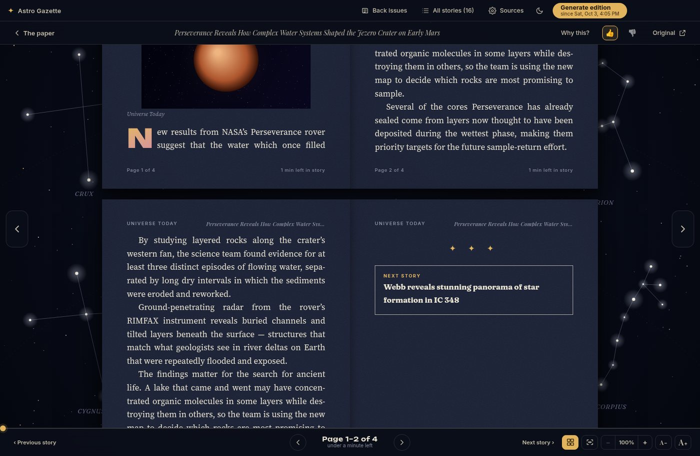
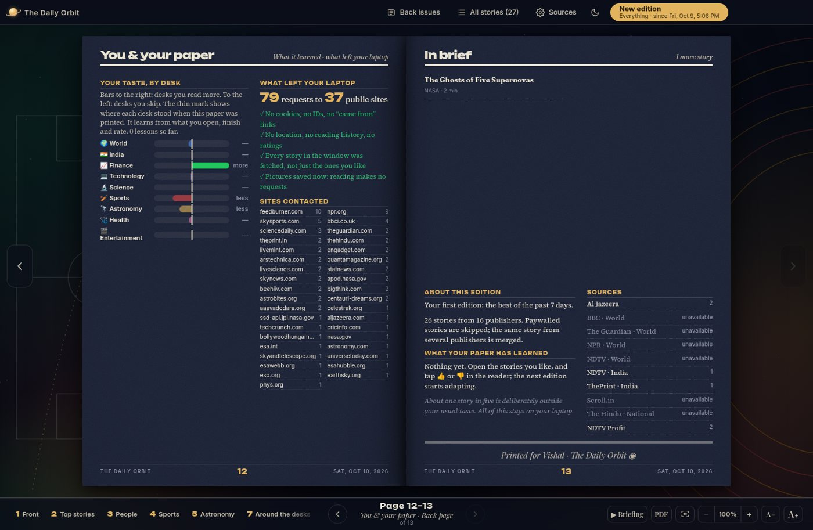

A newspaper that learns you, not one that sells you.

Pick Everything or any mix of nine desks. In seconds it reads about seventy free publishers and lays out a real paper: front page, sections, quiz, memes, and a back page. It ends. You finish it.
Open what you like, tap 👍 or 👎. One on-device model learns across every desk. Nothing is sent anywhere.
Every paper ends with “What left your laptop”: every site contacted, and that no cookies, IDs or reading history went out.
One click reads the top five stories aloud with your computer’s own voices. Offline. Great for low vision, dyslexia, or breakfast.
When several outlets cover the same news, compare how each told it, side by side.
A full paper from ~50 publishers in about 22 seconds in our benchmark; a second paper the same day is near-instant.
No infinite feed, no pop-ups, no autoplay. Big type, zoom to 250%, night and day paper, keyboard-first.






The windows you read in cannot reach the internet at all. A private fetcher collects every story in the date window, not just the ones you like, so even the requests say nothing about your taste.

| The Daily Orbit | Typical news apps | |
|---|---|---|
| Who learns your taste | Your own laptop | Company servers |
| Account, ads, trackers | None | Usually all three |
| Shows what it sent | A receipt in every paper | No |
| Paywalled stories | Detected and skipped | Shown, then blocked |
| Format | A paper that ends | An endless feed |
| Cost | Free, open source | Ads or subscription |